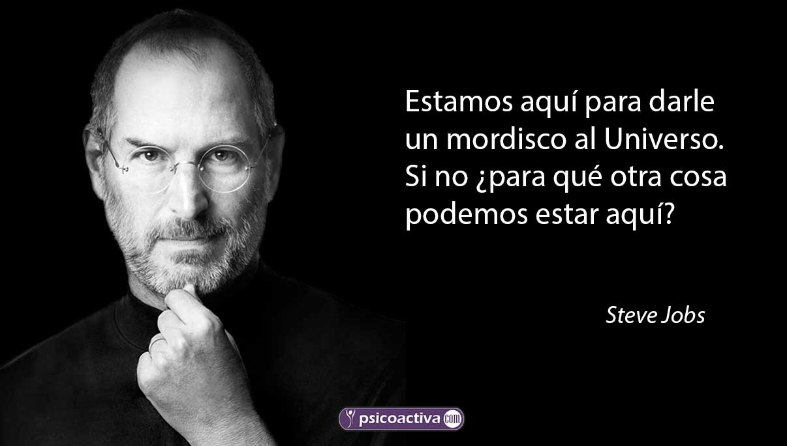

Soy un chico introvertido, me gusta disfrutar cada momento de mi vida en silencio, Se que mi rol actualmente es ser un estudiante y mi meta como estudiante es graduarme.
Sigueme en mis Redes"La única forma de hacer un gran trabajo es amar lo que haces."

El amor por la música es mucho más que un hecho de oír melodías. Es un vínculo personal y emocional entre las notas y las letras que pueden evocar recuerdos, emociones y experiencias. Para muchos, la música es un tipo de expresión que puede comunicar de una forma en que a veces las palabras no pueden. Es un elemento de inspiración, de consuelo y de energía, y tiene la capacidad de unir a las comunidades a lo largo de tiempos y civilizaciones dispares. La música, dicho de otro modo, es un componente fundamental de la experiencia humana, capaz de tocar nuestras vidas de maneras extraordinarias.
Mi set up favorito puede incluir una combinación de elementos que se adaptan a tus necesidades y preferencias personales. Podría tener una silla ergonómica que te brinde comodidad durante largas horas, un escritorio espacioso con buena iluminación para evitar la fatiga visual, y una computadora potente con múltiples monitores para mayor productividad. También podrías añadir algunos toques personales como luces LED, altavoces de alta calidad para disfrutar de tu música favorita, y organizadores para mantener todo en orden. Este set up no solo mejoraría tu eficiencia, sino que también crearía un ambiente agradable y motivador para trabajar o relajarte.
Los atardeceres tienen un poder casi mágico, capaces de detener el tiempo por un momento. Viendo el sol desaparecer en el horizonte, siento una mezcla de serenidad y maravilla. Las tonalidades cálidas del cielo, pasando del naranja al rosa y al púrpura, me envuelven en una sensación de paz. Es un instante de reflexión, donde la belleza natural me recuerda la grandeza y simplicidad del mundo. Así que, definitivamente, un atardecer es un abrazo visual de tranquilidad y asombro.